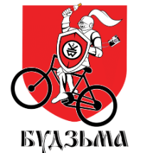
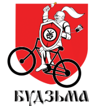

WYCIECZKI PUBLICZNE PROWADZIMY W JEZYKACH BIALORUSKIM ABO ROSYJSKIM
kliknij, aby dowiedziec sie wiecej


Witaj! Jeżeli chcesz poznać Mińsk i lubisz jeździć na rowerze, to świetnie trafiłeś! "Mienski vielašpacyr" ("Mieński spacer rowerowy") stworzony jest na to, aby opowiadać o tym mieście wszystkim zainteresowanym, w niezwykły sposób.
Przed dołączeniem do naszej wycieczki, prosimy zapoznać się z poniższymi informacjami
*wycieczka publiczna regularna czyli wycieczka dla grup zorganizowanych jest wycieczką otwartą, informację o niej rozpowszechniono publicznie w celu zbierania wszystkich chętnych; zwykle mówiono tak o wycieczce, żeby odróżnić ją od wycieczki indywidualnej (prywatnej), która jest zamówiona na życzenie klienta lub grupy klientów;
tutejsi, lubimy swoje miasto
interesujemy się naszym miastem i krajem, cenimy je i wciąż staramy się dowiedzieć o nich czegoś więcej
Profesjonalni przewodnicy
każdy z nas posiada atest przewodnika Narodowej Agencji Turystyki Republiki Białoruś oraz odpowiednie uprawnienia do oprowadzania wycieczek; każdy z nas ma doświadczenie w oprowadzaniu grup zorganizowanych
Żadnych haczyków
nie prowadzimy turystów do sklepów z pamiątkami, kawiarni itp. dla własnych zysków, ale możemy polecić dobre i sprawdzone miejsca, które sami lubimy
Pracujemy od 2014 roku
do tej pory oprowadzaliśmy setki wycieczek najróżniejszych grup turystów, m.in. ambasadorów, urzędników, gwiazd estrady, pracowników IT, kolejarzy, a także wielu innych fantastycznych ludzi
Mówimy w różnych językach
jak na razie, mówimy w języku białoruskim, angielskim, rosyjskim, polskim, francuskim
Nie tylko popularne trasy
lubimy nie tylko najpiękniejszą, centralną cześć naszego miasta, ale też jego zakątki, osiedla starych drewnianych domów, radzieckie bloki mieszkalne, strefy przemysłowe; możemy dzielić się naszymi odkryciami z tymi, którzy dzielą podobne pasje
Autorskie podej≈õcie
eksplorujemy miasto i jego okolice pod różnymi kątami, otwieramy dla siebie nowe miejsca. Nasze odkrycia układamy w nowe, oryginalne trasy, po których z radością was oprowadzimy


 



Przepraszamy, wiadomosci sa dostępne tylko w języku białoruskim z dublowaniem każdej wiadomości po-rosyjsku.
W celu otrzymania aktualnych informacji w języku polskim prosimy skontaktować się z nami.